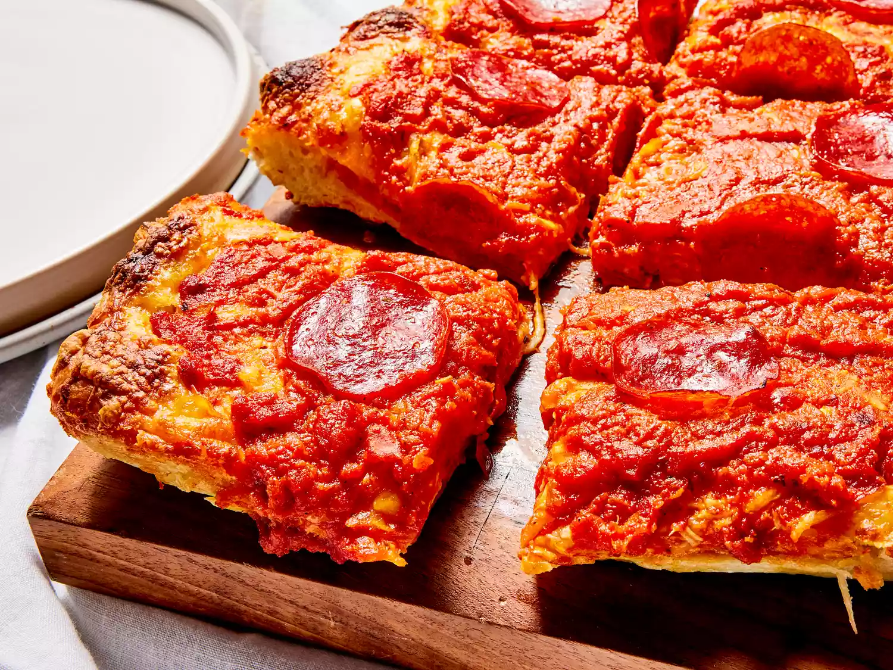

Detroit Pizza
Try this Detroit-style pizza recipe the next time you want a crunchy, crispy, cheese-laden slice!
Detroit-style pizza is often referred to as a deep-dish pizza, but I don't think that accurately
captures the essence of this crispy, crusty, crazy-good pizza. It has the flavor elements of a
slightly charred thin-crust pizza and the texture of a light and airy focaccia. If you use a properly
shaped pan, the edges of your crust get wonderfully crunchy, making for a truly unique experience.

Ingredients:
Dough
- 1 cup of warm water
- 1 package active dry yeast
- 1 teaspoon white sugar
- 2 1/2 cups bread flour
- 3 teaspoons olive oil, divided
- 1 teaspon kosher salt
Sauce
- 1 jar marinara sauce
- 2 teaspoons dried oregano
- 1 teaspoon red pepper flakes
- 1 teaspoon garlic powder
Toppings
- 8 ounces shredded onterrey Jack Cheese
- 4 ounces shredded mild Cheddar Cheese
- 1 package thick pepperoni slices
Instructions
Gather all ingredients.
Pour warm water into the bowl of stand mixer; mix in yeast and sugar and let dissolve.
Add 2 teaspoons olive oil, salt, and bread flour. Knead mixture together with a dough hook attachment
until dough is very smooth, soft, and elastic.
Drizzle remaining 1 teaspoon oil onto a 10x14-inch Detroit-style pizza pan; use your fingers to spread
oil over the bottom of the pan. Place dough in the center of the pan. Oil your fingers, then pull and
stretch dough into a rectangular shape.
Cover and let rise until doubled in volume, about 1 hour.
Meanwhile, make the sauce: Bring marinara sauce, oregano, red pepper flakes, and garlic powder to a
simmer in a saucepan over medium-low heat. Simmer for 15 minutes.
Preheat the oven to 525 degrees F (274 degrees C). Combine Monterey Jack and Cheddar cheese into bowl.
Toss lightly to mix together.
Finish the dough: Rub fingertips with some olive oil from the pan. Press out air from the dough while
stretching and pushing it into a rectangle that goes all the way to the edges of the pan. Stretch
dough up the sides about 1/2 inch or so.
Lay almost all pepperoni slices onto dough. Scatter cheese evenly over top, making sure to fully cover
all the edges where dough meets the pan.
Ladle sauce on top in three long strips. Arrange remaining pepperoni slices over top.
Bake in the preheated oven until pizza is a bit darker than golden brown, about 15 minutes. Let cool
for 5 minutes.
Very carefully slide pizza onto a cutting board. Slice into rectangular pieces.
Serve immediately and enjoy!